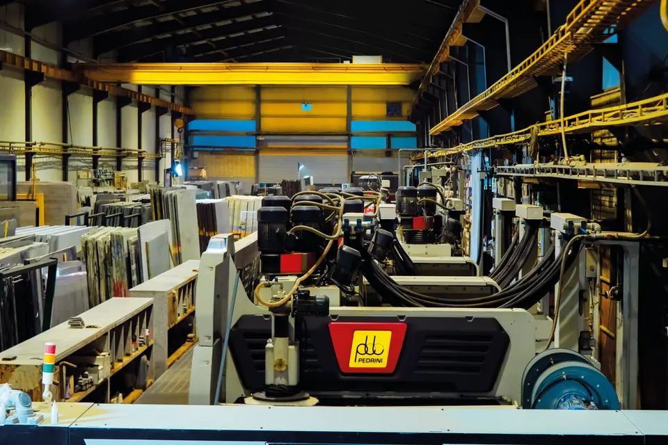
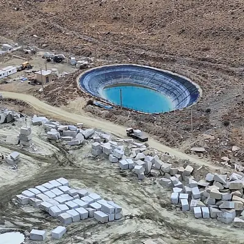
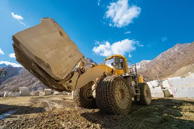
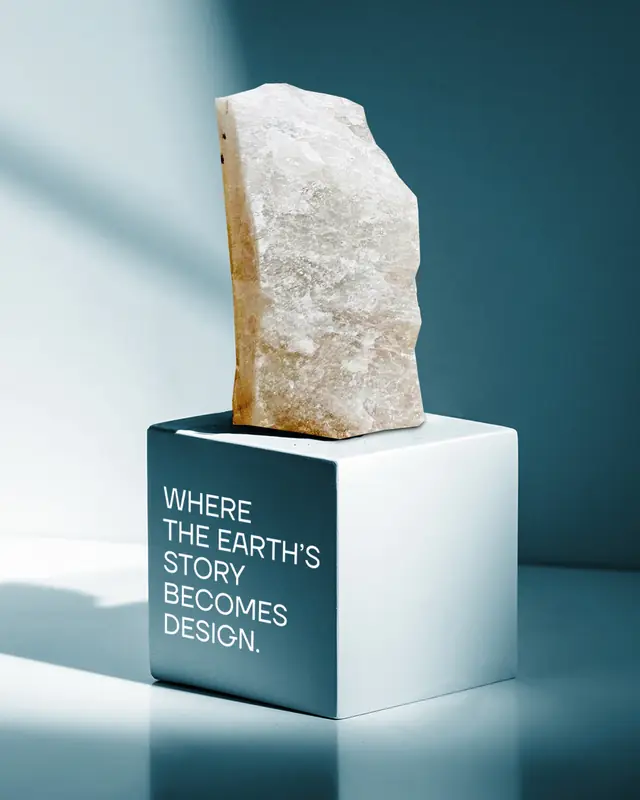

Beautifully Strong
دربارۀ ما

شرکت تولید سنگفرش ریجن
معرفی
معدن گرانیت سفید نطنز ریجن، تحت بهرهبرداری شرکت تولید سنگفرش ریجن واقع در منطقۀ نطنز استان اصفهان، یکی از بزرگترین و معتبرترین منابع استخراج گرانیت سفید در ایران به شمار میرود. این معدن با برخورداری از ذخایر غنی و سنگهای باکیفیت توانسته است جایگاه ویژهای در صنعت سنگ کشور به دست آورد.
محصولات این معدن، بهخصوص گرانیت سفید با رنگهای متنوع از سفید خالص تا خاکستری روشن و دارای بافتی یکنواخت، در صنایع مختلف عمرانی، دکوراسیون داخلی، طراحی فضاهای شهری و همچنین پروژههای زیرساختی بزرگ کاربرد فراوانی دارند. بهرهبرداری مدرن، فرآوری دقیق و کنترل کیفی بالا از ویژگیهای بارز معدن ریجن است که باعث شده است محصولات آن علاوه بر بازار داخلی، در بازارهای بینالمللی نیز بهخوبی شناخته و پذیرفته شوند.
همچنین این سنگ، به دلیل تراکم بالا و بافت یکنواخت، برای کاربردهای گوناگون در فرآوریهای سنگ خام مناسب است و در این زمینه بسیار موفق عمل کرده است.

تاریخچه
فعالیت معدن گرانیت سفید نطنز ریجن از دهههای گذشته آغاز شده و تاکنون پیوسته ادامه داشته است. این معدن با گذشت زمان، همگام با پیشرفتهای فنی و تکنولوژیکی، زیرساختهای خود را بهطور چشمگیری توسعه داده است. استفاده از ماشینآلات پیشرفتۀ استخراج و فرآوری، بهکارگیری فناوریهای نوین در فرآوری سنگ و همچنین حضور گروهی متخصص و مجرب در زمینۀ معدنکاری و مهندسی سنگ، باعث شدهاند معدن ریجن به یکی از پیشروهای صنعت سنگ گرانیت در ایران تبدیل شود. سنگهای استخراجی این معدن به دلیل کیفیت بالای رنگ، مقاومت مکانیکی مطلوب و بافت پنبهای و یکنواخت، همواره مورد توجه معماران، طراحان داخلی، پیمانکاران و صادرکنندگان بوده است و نقش مهمی در پروژههای ملی و بینالمللی ایفا کرده است.

گرانیت طوسی نطنز ریجن، استخراجشده از معدن سنگفرش ریجن واقع در شهرستان نطنز، استان اصفهان، از نوع گرانیت-گرانودیوریت و حاصل فرایندهای ماگمایی اواخر دورۀ مزوزوئیک و اوایل دورۀ سنوزوئیک زمینشناسی است. ساختار متراکم آن و وجود کانیهای ماگمایی تیرهرنگ، این سنگ را در طیف خاکستری تیره با جلوهای یکنواخت و ماندگار قرار داده است.

شرکت فرآورسنگ بهکوشان
شرکت فرآورسنگ بهکوشان، که در سال ۱۳۹۶ تأسیس شده است، بزرگترین تولیدکنندۀ اسلبهای گرانیت و کوارتزیت در ایران با بهرهگیری از فناوری پیشرفتۀ مولتیوایر است. مجموعۀ ما با استفاده از بهروزترین تکنولوژیهای فرآوری سنگ و تکیه بر نیروی انسانی متخصص، محصولاتی با کیفیت ممتاز و تنوع بالا به بازارهای داخلی و بینالمللی عرضه میکند.
خط تولید ما مجهز به سه دستگاه مولتیوایر ایتالیایی است که امکان برش دقیق بلوکهای سنگی به اسلبهایی با ضخامتهای متنوع، از ۱۲ میلیمتر به بالا، را فراهم میسازد. مواد اولیه با نهایت دقت و وسواس از معادن معتبر سراسر جهان، از جمله ایران، برزیل، اوکراین، هند و کشورهای آفریقایی انتخاب میشود.
مأموریت ما ارائۀ سنگهایی مستحکم، زیبا و ماندگار است که پاسخگوی سلایق متنوع مشتریان بوده و همزمان استانداردهای صنعت ساختوساز را ارتقا دهد.
مزیتهای رقابتی بهکوشان
- خلاقیت و سازگاری با نیاز بازار
- روابط مبتنی بر ارزش و اعتماد
- اولویت کیفیت بر کمیت
- یادگیری و بهبود مستمر
- همکاری حرفهای
- شفافیت در فرایندها
چرا گرانیت و کوارتزیت بهکوشان؟
- استحکام بالا: مقاومت عالی در برابر سایش، فشار و حرارت
- زیبایی طبیعی: الگوها و رنگهای منحصربهفرد برای فضاهای لوکس
- دوام و پایداری: انتخابی ماندگار و سازگار با محیطزیست
- کاربرد گسترده: مناسب برای کانترتاپ، کف، دیوار، نما و پروژههای مسکونی، تجاری و شهری
در بهکوشان، دقت در فرآوری، مهارت فنی و تمرکز بر رضایت مشتری در کنار هم قرار گرفتهاند تا سنگهایی الهامبخش و ماندگار خلق شوند.
خواه در حال ساخت یک خانۀ مسکونی لوکس، یک فضای تجاری مدرن یا یک پروژۀ معماری در مقیاس بزرگ باشید، گرانیت و کوارتزیت ما کیفیت و شخصیت مورد نیاز شما را ارائه میدهد.
زیبایی جاودانۀ سنگهای طبیعی
سنگهای طبیعی همواره نمادی از شکوه، اصالت و ماندگاری بودهاند. مجموعهای از مرمر، گرانیت، اونیکس، تراورتن و سنگ آهک با رنگهای روشن یا ملایم و طیفهای هماهنگ، فضایی لوکس و چشمنواز خلق میکنند. تنوع این سنگها، حاصل فرآوری دقیق با فناوریهای نوین است و برای دکوراسیونهای خاص و پروژههای شاخص معماری انتخابی ایدهآل به شمار میرود.




سنگ طبیعی بهکوشان، هنر گرانیت و کوارتزیت
در بهکوشان، تمرکز اصلی بر فرآوری دو سنگ طبیعی شاخص و بادوام، گرانیت و کوارتزیت است. این سنگها که طی میلیونها سال و در اثر فرایندهای زمینشناسی شکل گرفتهاند، نمایانگر استحکام، زیبایی طبیعی و اصالت ماندگار هستند.
هر بلوک گرانیت و کوارتزیت فرآوریشده در بهکوشان اثری منحصربهفرد از طبیعت است که با رگههای پیچیده، بافتهای غنی و تنوع رنگیاش به هر پروژه هویتی متفاوت میبخشد. تعهد ما تبدیل این مواد خام ارزشمند به محصولاتی با بالاترین استانداردهای کیفیت و طراحی است.


دو نسل،
یک میراث
نسل اول – بنیانگذاران
شرکت ما داستان خود را از سالها پیش با تلاش و تخصص دو پیشگام در صنعت سنگ آغاز کرد.
آقای حمیدرضا ناصریزاده آقای محمدجعفر محمدی

مهندس محمد جعفر محمدی
متولد بهبهان، دارای مدرک کارشناسی در رشتۀ مهندسی آب و خاک از دانشگاه علوم کشاورزی و منابع طبیعی اهواز و مدرک کارشناسی ارشد در رشتۀ خاکشناسی از دانشگاه ریدینگ انگلستان است. با تجربۀ تحقیقاتی بینالمللی به مدت ۲۰ سال و تخصص در سیستمهای آبیاری تحت فشار، از سال ۱۳۷۲ تاکنون به عنوان سهامدار و بنیانگذار شرکت سنگفرش ریجن کاشان و شرکت فرآورسنگ بهکوشان، مسیر توسعه و فرآوری سنگهای ساختمانی را هدایت کرده است.

مهندس حمیدرضا ناصری زاده
متولد کاشان، دارای مدرک کارشناسی مهندسی صنایع از دانشگاه ایالتی کارولینای شمالی است. در سال ۱۳۷۲ شرکت تولید سنگفرش ریجن کاشان را تأسیس کرد. او با دیدگاه نوآورانه و مدیریت هوشمندانه، پایههای محکم شرکت را بنیان نهاد و امروز همچنان به عنوان عضو هیأتمدیره، مسیر رشد و تعالی را هدایت میکند.
نسل دوم – توسعه و مدیریت امروز
دو نسل از متخصصان متعهد و ماهر، با دیدگاهی مشترک و با بهرهگیری از ماشینآلات مدرن در کنار استعدادهای جوان و کارآمد، تلاش میکنند کیفیت بالای محصول را تضمین کنند و جایگاه سنگ گرانیت را ارتقا دهند.

مهندس پدرام محمدی
متولد تهران، دارای مدرک کارشناسی اقتصاد نظری، سال ۱۳۸۴ در شرکت تولید سنگفرش ریجن کاشان فعالیت خود را آغاز کرد و اکنون رئیس هیأتمدیرۀ شرکت فرآورسنگ بهکوشان و شرکت سنگ فرش ریجن کاشان است. او با تخصص خود در اقتصاد و مدیریت، نقشی اساسی در تضمین رشد پایدار و توسعۀ کسبوکار شرکت ایفا کرده است.

طناز ناصری زاده
متولد تهران، دارای مدرک کارشناسی راهنمایی و مشاوره است؛ از سال ۱۳۹۷ به گروه مدیریتی پیوست و هماکنون عضو هیأتمدیرۀ شرکت فرآورسنگ بهکوشان است. حضور او موجب تقویت مدیریت منابع انسانی و نیز فرایندهای تصمیمگیری و مشاورهای شرکت شده است.
صفحات سنگی
۱۲ میلیمتری
جدیدترین ابداع بهکوشان

بهروزترین محصول شرکت بهکوشان نسل جدیدی از اسلبهای نازک گرانیت و کوارتزیت با ضخامت ۱۲ میلیمتر است که کاملاً متناسب با نیازهای معماری مدرن و پروژههای اجرایی سبکسازیشده طراحی شدهاند.
این اسلبهای فوقنازک دارای مزایای فراوانی در ساختوساز و معماری هستند، از جمله:
- سبک بودن
- سهولت در حملونقل و نصب
- ظرافت در طراحی
- قیمت کمتر
شرکت فرآور سنگ بهکوشان با ارائه اسلبهای گرانیت و کوارتزیت با ضخامت ۱۲ میلیمتر، وارد نسل جدیدی از محصولات سنگی شده است که کاملاً متناسب با نیازهای معماری مدرن و پروژههای اجرایی سبکسازی شده، طراحی شدهاند.
سبکی
وزن کمتر بر روی سازه و کاهش هزینههای حملونقل.
نصب آسانتر
ضخامت کمتر به معنای سهولت بُرش و فرایند نصب سریعتر است.
زیباییشناسی
طرحها و رنگها بهتر دیده میشوند و در ترکیب با مواد مدرن، مانند فلز، شیشه و چوب، جلوۀ خاصی پیدا میکنند.
صرفهجویی اقتصادی
صرفهجویی اقتصادی در ضخامت کمتر، مصرف مواد خام کمتر و در نتیجه قیمت مناسبتر در پروژههای انبوه.
مزیتهای زیستمحیطی
با استفاده از این محصول، میزان مصرف مادۀ خام بهطور قابلتوجهی کاهش مییابد. این ویژگی نهتنها موجب کاهش استخراج منابع طبیعی میشود، بلکه به کاهش ضایعات و مصرف انرژی نیز کمک میکند. در نتیجه، این رویکرد نقش مؤثری در توسعۀ پایدار ایفا میکند و همراستا با اهداف زیستمحیطی جهانی است.
همچنین این فرایند نیاز به نیروی انسانی را کاهش میدهد و موجب بهینهسازی راندمان اجرایی میشود.
از این محصول میتوان در فضاهای مختلف استفاده کرد، از جمله:
- نمای داخلی و خارجی ساختمانها
- کفپوش فضاهای پرتردد
- دیوارهها و پوششهای دکوراتیو
یکی از نمونههای موفق اجراشدۀ این محصول در ایران «پروژۀ حیات نیاوران» است که عملکرد و کیفیت زیباییشناختی این محصول را در کاربردهای دنیای واقعی نشان میدهد.
از دیگر مزایای سنگ با ضخامت کمتر
متراژ بهدستآمده در تولید سنگ با ضخامت ۱۲ میلیمتر ۴۰٪ بیشتر از متراژ بهدستآمده از تولید سنگ با ضخامت ۲۰ میلیمتر میباشد.
در نتیجه، میتوان سطوح بزرگتر را هنگام نصب بهطور یکنواختتری پوشش داد و از پیوستگیِ بصری و کاراییِ مواد اطمینان حاصل کرد.
گرانیت
گرانیت سنگی آذرین با منشأ آتشفشانی است که حدود ۳۰٪ کوارتز و ۶۰٪ فلدسپات در ترکیب خود دارد. این ساختار باعث سختی، مقاومت سایشی بالا و استحکام فشاری فوقالعادۀ آن میشود. گرانیت در طیف گستردهای از رنگها و طرحهای یکنواخت تا رگهدار عرضه شده و به دلیل مقاومت بالا در برابر شرایط مختلف آبوهوایی، گزینهای ایدهآل برای کاربردهای داخلی و خارجی ساختمان است.


کوارتزیت
کوارتزیت از نظر ویژگیهای فیزیکی و مکانیکی شباهت زیادی به گرانیت دارد و از سختی و دوام بالایی برخوردار است. این سنگ بسته به نوع و ساختار خود، بهطور گسترده در فضاهای خارجی و پروژههایی که نیاز به مقاومت بالا دارند مورد استفاده قرار میگیرد و جلوهای مدرن و متمایز به فضا میبخشد.


